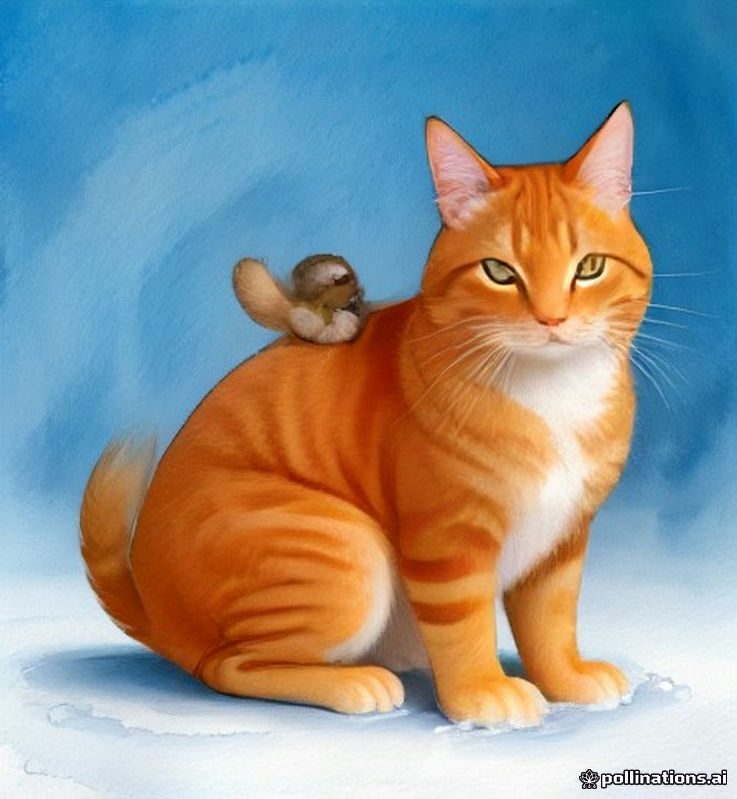
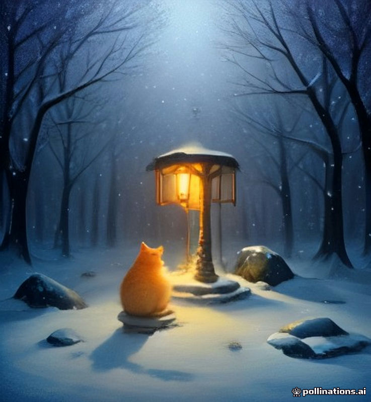
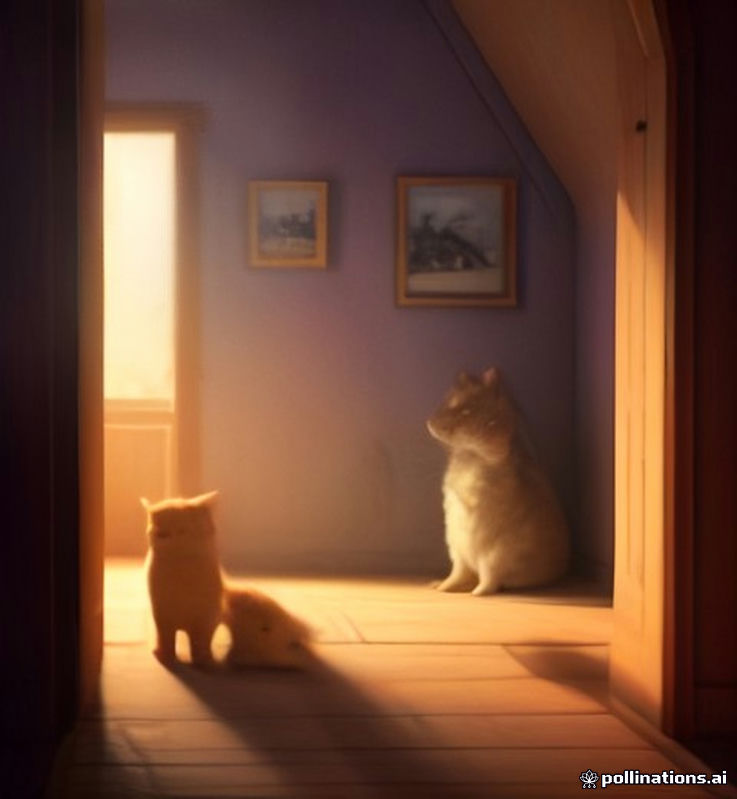

Pip finds a tiny, magical button that holds the warmth of a summer afternoon in the middle of a winter storm.
The sky was the color of a faded woolly blanket, and the snowflakes were dancing like dizzy moths. I was busy making sure the town's paths were clear when Pip gave my ear a sharp tug. He had spotted something under the old oak tree, tucked deep within a drift that looked like a giant scoop of vanilla ice cream. "Wait up, Pip!" I meowed softly, my paws crunching through the crusty white layer. There, peeking out from the frost, was a tiny wink of orange light, as if a star had fallen and forgotten to go out.
Pip hopped down and brushed away the snow with his tiny paws. It wasn't a star, but a small, round button made of polished amber. It didn't just look warm; it felt warm, too. When Pip touched it, a soft hum vibrated through the air, like a distant bumblebee in a summer garden. I leaned down to sniff it, my whiskers twitching. It smelled like cedarwood and honey. "It’s a hearth-button, Pip," I whispered. "It’s what happens when someone’s home-warmth gets too big for just one house and spills out into the world."

We decided to see where the button’s glow pointed. As Pip held it high above his head, the amber light stretched out in a long, golden ribbon across the white town plaza. It didn't lead to a fancy shop or a big house. Instead, it led us straight to the old stone bench by the fountain, where a small, shivering bird was tucked into a crack in the rock. The button’s light began to pulse gently, casting a circle of heat that melted the frost around the little bird’s frozen toes. Pip held the button close, sharing the magic.

By the time the sun began to set behind the hills, the bird was chirping a tiny song of thanks and flying off to its nest. The button’s glow faded into a dull, comforting simmer. Pip climbed back onto my head, tucking the amber treasure safely into the folds of my teal scarf. We walked home together, the snow still falling, but the air around us felt like a hug. Some buttons hold coats together, but this one held the whole winter afternoon in a soft, golden embrace. We’d keep it safe for the next cold day.